Para quem é este guia
Para quem vai programar o CLP. O processo foi feito de propósito com uma entrada analógica e uma saída analógica, para que a aula seja sobre o canal analógico — de onde o sinal nasce, como vira número no CLP, como o número do CLP vira efeito no processo — e não sobre o processo em si.
- Entrada analógica: o transmissor de nível LT-01 (4–20 mA) chega ao canal EA0 do CLP.
- Saída analógica: o canal SA0 do CLP (0–10 V) dá a referência de velocidade ao inversor CFW500 da bomba.
O CLP pode ser o Altus XP325 (MasterTool) ou o CODESYS Control Win; o simulador conversa com ele por Modbus TCP, OPC UA ou OPC DA. O inversor é o modelo completo do simulador CFW500 do HUB e já vem parametrizado para receber a referência pela entrada analógica.
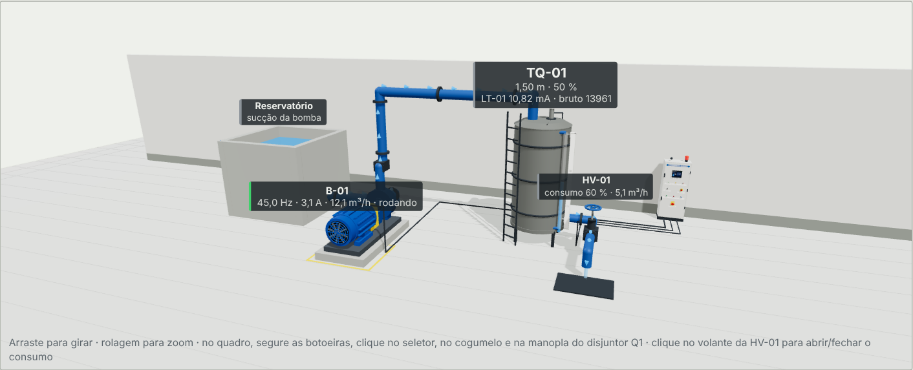
O processo em uma página
Uma bomba B-01, acionada por um inversor, tira água de um reservatório e enche o tanque TQ-01 (2 m² de área, 3 m de altura, 6 m acima do reservatório). O tanque alimenta um consumidor por gravidade através da válvula manual HV-01, que o instrutor abre e fecha — é a perturbação. O programa do CLP decide a velocidade da bomba olhando o nível.
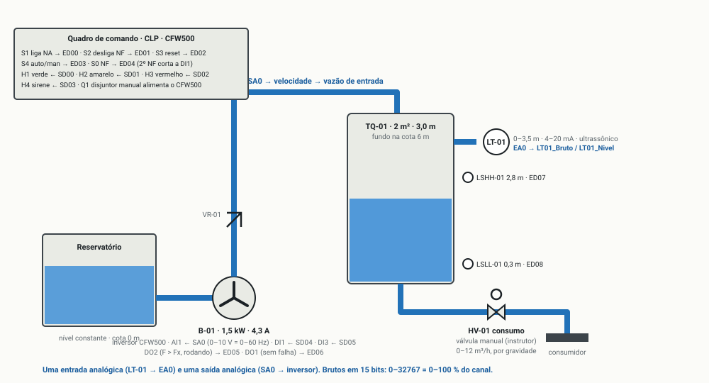
| Elemento | Sinal | Canal / variável |
|---|---|---|
| LT-01, nível do tanque | transmissor ultrassônico 0–3,5 m, 4–20 mA | EA0 → LT01_Bruto (contagem do A/D, 0–32767) |
| Referência do inversor | 0–10 V = 0–60 Hz na AI1 do CFW500 | SA0 ← Ref_Bruto (contagem do D/A, 0–32767) |
| LSHH-01 / LSLL-01 | boias, contato NA, 2,8 m e 0,3 m | ED07 / ED08 |
| S1 liga, S2 desliga (NF), S3 reset, S4 auto/manual, S0 emergência (NF) | botoeiras de 22 mm | ED00–ED04 |
| CFW500 DO2 "rodando" e DO1 "sem falha" | relés do inversor | ED05 / ED06 |
| H1, H2, H3, H4 | sinaleiros e sirene | SD00–SD03 |
| CFW500 DI1 gira/para, DI3 reset | entradas do inversor | SD04 / SD05 |
| Q1 | disjuntor-motor que alimenta o inversor — manual, no quadro (manopla na porta) | — (não é do CLP) |
Números que valem decorar: a bomba a 60 Hz manda 18,5 m³/h; a 45 Hz (75 %), 12 m³/h; abaixo de uns 36 Hz não entra água, porque a bomba não vence os 6 m de altura mais a coluna do tanque. Com a HV-01 toda aberta saem até 12 m³/h. Cada 2 m³ são 1 m de nível.
Como o sinal viaja: do sensor ao seu programa e de volta
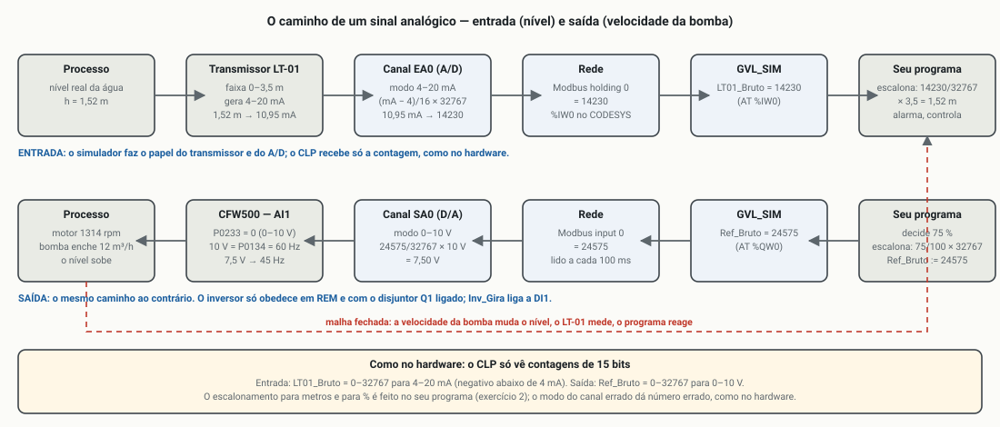
Entrada. O tanque tem 1,52 m de água. O LT-01 está calibrado para 0–3,5 m e gera 4–20 mA: 4 + 16 × (1,52 / 3,5) = 10,95 mA. O canal EA0 do CLP, configurado em 4–20 mA, converte em contagem de 15 bits: (10,95 − 4) / 16 × 32767 = 14230. Esse número chega ao CLP na variável GVL_SIMULADOR.LT01_Bruto (Modbus: holding register 0 → %IW0). Como num CLP real, o programa recebe só a contagem e faz o escalonamento: 14230 / 32767 × 3,5 = 1,52 m.
Saída. Seu programa decide 75 % e escala para a contagem do D/A: GVL_SIMULADOR.Ref_Bruto := 24575 (75 % de 32767). O simulador lê (input register 0 → %QW0) e converte no sinal do canal SA0, 0–10 V: 7,50 V. Esse sinal entra na AI1 do CFW500; o inversor está em P0233 = 0 (0–10 V) e P0134 = 60 Hz, logo 7,5 V = 45 Hz. O motor acelera pela rampa de 2 s, a bomba manda 12 m³/h, o nível sobe, o LT-01 mede — e a malha fecha.
Dois detalhes como na vida real: o inversor só obedece em REM e com o disjuntor Q1 ligado; e se o canal estiver no modo errado (EA0 em 0–20 mA com transmissor 4–20 mA), a contagem sai errada — 1,52 m viram 17938 e o escalonamento daria 1,92 m, enquanto o visor do tanque mostra 1,52 m. É assim que se descobre o erro de configuração.
Variáveis e endereços
Não há vetores. Cada sinal é uma variável com nome próprio e um endereço. No CLP todas ficam na lista de variáveis globais GVL_SIMULADOR (arquivo mastertool/GVL_SIMULADOR.st), com os mesmos nomes da tela, e cada uma é ligada ao seu canal do Modbus TCP Slave Device pela coluna Variable da aba de mapeamento (passo a passo em Interligar). Não há variável REAL na troca: o canal analógico vai em contagem (0–32767), a velocidade da IHM em % (75 = 75 %) e o setpoint e o nível da IHM em centímetros (200 = 2,00 m). As conversões ficam no programa (três linhas, em Escalonamento na prática).
O simulador escreve, o CLP lê
Variável (GVL_SIMULADOR) |
Tipo | Modbus | CODESYS | Significado |
|---|---|---|---|---|
S1_Liga |
BOOL | coil 0 | %IX8.0 |
botoeira S1 liga (NA): 1 enquanto pressionada |
S2_Desliga_NF |
BOOL | coil 1 | %IX8.1 |
botoeira S2 desliga (NF): 1 em repouso, 0 pressionada |
S3_Reset |
BOOL | coil 2 | %IX8.2 |
botoeira S3 reset (NA) |
S4_Auto |
BOOL | coil 3 | %IX8.3 |
seletor: 1 automático, 0 manual |
S0_Emerg_NF |
BOOL | coil 4 | %IX8.4 |
emergência (NF): 1 destravado, 0 acionado (o 2º NF corta a DI1 do inversor por hardware) |
Inv_Rodando |
BOOL | coil 5 | %IX8.5 |
relé DO2 do CFW500 (F > Fx): acima de 3 Hz |
Inv_OK |
BOOL | coil 6 | %IX8.6 |
relé DO1 do CFW500 (sem falha): 0 = falha ou sem alimentação |
LSHH |
BOOL | coil 7 | %IX8.7 |
nível acima de 2,8 m |
LSLL |
BOOL | coil 8 | %IX9.0 |
nível abaixo de 0,3 m |
LT01_Bruto |
INT | holding 0 | %IW0 |
nível, contagem 0–32767 = 4–20 mA = 0–3,5 m; negativo abaixo de 4 mA |
HB_Sim |
UINT | holding 1 | %IW1 |
heartbeat do simulador, +1/s |
IHM_Velocidade |
INT | holding 2 | %IW2 |
IHM: velocidade pedida em manual, em % (0–100) |
IHM_Setpoint |
INT | holding 3 | %IW3 |
IHM: setpoint de nível para o automático, em cm (200 = 2,00 m) |
O CLP escreve, o simulador lê
Variável (GVL_SIMULADOR) |
Tipo | Modbus | CODESYS | Significado |
|---|---|---|---|---|
H1 · H2 · H3 · H4 |
BOOL | discrete 0 · 1 · 2 · 3 | %QX6.0–%QX6.3 |
sinaleiro verde, amarelo, vermelho e sirene |
Inv_Gira |
BOOL | discrete 4 | %QX6.4 |
DI1 do CFW500: gira (rampa P0100, 2 s); 0 para (rampa P0101, 2 s) |
Inv_Reset |
BOOL | discrete 5 | %QX6.5 |
DI3 do CFW500: borda de subida reseta falha |
Ref_Bruto |
INT | input 0 | %QW0 |
referência, contagem 0–32767 = 0–10 V = 0–60 Hz |
HB_CLP |
UINT | input 1 | %QW1 |
heartbeat do CLP, +1 a cada 0,5 s |
IHM_Nivel |
INT | input 2 | %QW2 |
nível que a IHM mostra, em cm (152 = 1,52 m) |
Variáveis internas do CLP (não vão para a rede)
Variável (GVL_SIMULADOR) |
Tipo | Significado |
|---|---|---|
IHM_Nivel_Real |
REAL | nível do tanque em metros (IHM_Nivel / 100) — é o que o automático compara |
IHM_Nivel_SP_Real |
REAL | nível que o operador envia através da IHM, já convertido para metros (IHM_Setpoint / 100) |
IHM_Nivel_SP_Liga |
REAL | liga a bomba abaixo deste nível: IHM_Nivel_SP_Real − 0,10 |
IHM_Nivel_SP_Desl |
REAL | desliga a bomba acima deste nível: IHM_Nivel_SP_Real + 0,10 |
Os valores são os mesmos em qualquer protocolo (Modbus, OPC UA ou OPC DA). A tabela completa, com a notação clássica (00001, 40001…), o valor ao vivo e um botão para copiar, está na seção Variáveis e endereços da tela.
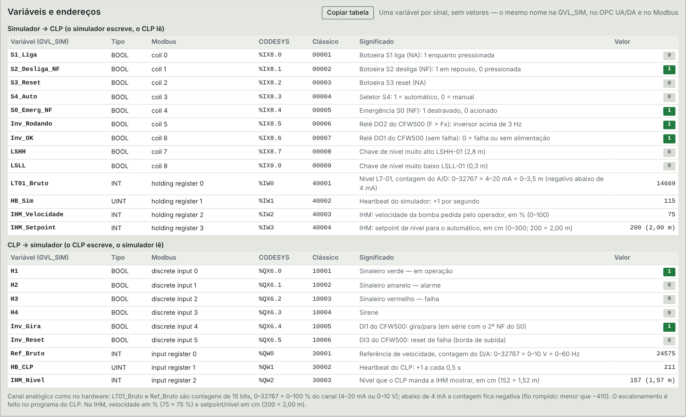
Escalonamento na prática
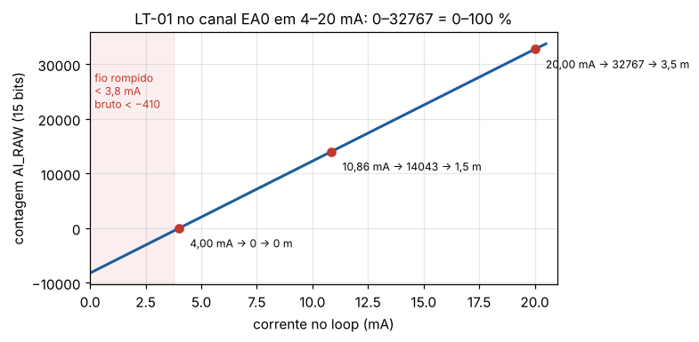
O canal analógico chega e sai em contagem de 15 bits. São três cálculos no programa, exatamente estes:
(* saída: velocidade pedida na IHM (%) -> contagem do D/A (0..32767 = 0..10 V = 0..60 Hz) *)
GVL_SIMULADOR.Ref_Bruto := REAL_TO_INT(GVL_SIMULADOR.IHM_Velocidade / 100.0 * 32767.0);
(* entrada: contagem do A/D do LT-01 (0..32767 = 0..3,5 m) -> nível em cm para a IHM *)
GVL_SIMULADOR.IHM_Nivel := REAL_TO_INT((GVL_SIMULADOR.LT01_Bruto) / 32767.0 * 350);
(* IHM: setpoint em cm -> metros (REAL), para o controle automático *)
GVL_SIMULADOR.IHM_Nivel_SP_Real := INT_TO_REAL(GVL_SIMULADOR.IHM_Setpoint) / 100.0;
A conta de cada um, para conferir com a tela:
LT01_Bruto |
corrente | nível | IHM_Nivel (cm) |
|---|---|---|---|
| 0 | 4,00 mA | 0,00 m | 0 |
| 9362 | 8,57 mA | 1,00 m | 100 |
| 14043 | 10,86 mA | 1,50 m | 150 |
| 23405 | 15,43 mA | 2,50 m | 250 |
| 26214 | 16,80 mA | 2,80 m (LSHH) | 280 |
| 32767 | 20,00 mA | 3,50 m | 350 |
IHM_Velocidade |
Ref_Bruto |
SA0 | CFW500 | Vazão |
|---|---|---|---|---|
| 0 % | 0 | 0 V | 0 Hz | 0 |
| 60 % | 19660 | 6,0 V | 36 Hz | ~7 m³/h |
| 75 % | 24575 | 7,5 V | 45 Hz | ~12 m³/h |
| 100 % | 32767 | 10,0 V | 60 Hz | ~18,5 m³/h |
IHM_Setpoint |
IHM_Nivel_SP_Real |
|---|---|
| 150 | 1,50 m |
| 200 | 2,00 m |
| 250 | 2,50 m |
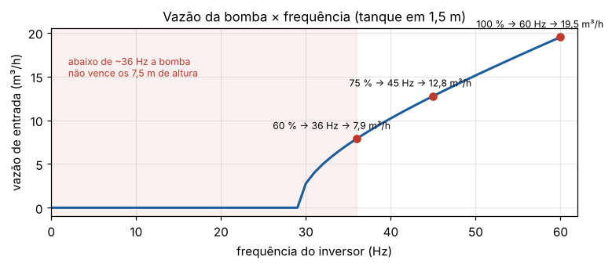
Fio rompido. Um transmissor sadio nunca vai abaixo de 4 mA; fio partido dá 0 mA e a contagem vai a −8192. Detecte abaixo de 3,8 mA, ou seja GVL_SIMULADOR.LT01_Bruto < -410, trate como falha de instrumento e pare o automático — um programa ingênuo leria −0,875 m, acharia o tanque vazio e ligaria a bomba no máximo.
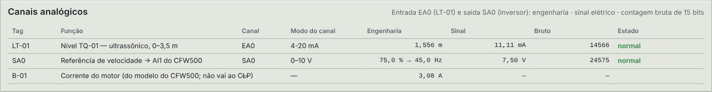
A IHM do operador
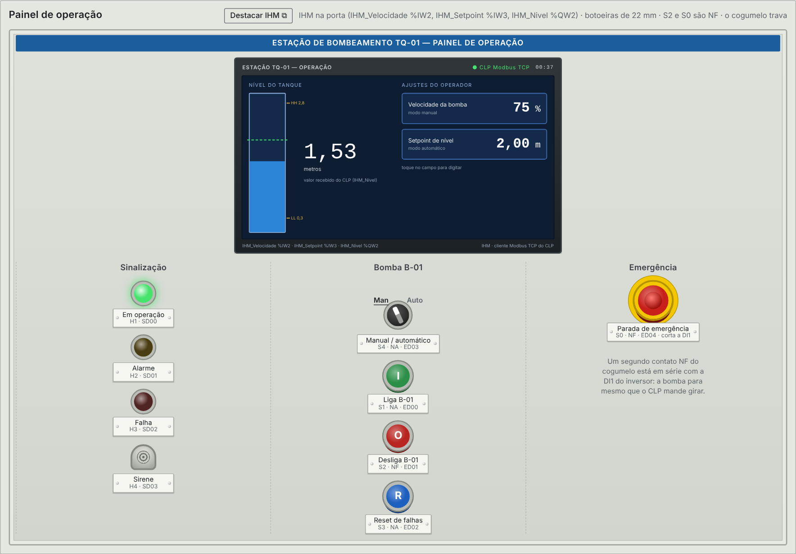
A IHM de 7" fica montada na porta do quadro, acima das botoeiras — no 3D, clicar nela abre a mesma IHM em uma janela flutuante. Ela é um segundo cliente Modbus do CLP, sem nenhum fio: não enxerga o transmissor nem o inversor, só troca três registradores com o CLP. O operador toca no campo e digita no teclado numérico, como numa IHM de verdade.
| Sentido | Modbus | CODESYS | Conteúdo |
|---|---|---|---|
| IHM → CLP | holding 2 | %IW2 |
IHM_Velocidade: velocidade da bomba em manual, em % (60 = 60 %) |
| IHM → CLP | holding 3 | %IW3 |
IHM_Setpoint: setpoint de nível para o automático, em cm (250 = 2,50 m) |
| CLP → IHM | input 2 | %QW2 |
IHM_Nivel: nível que o CLP quer mostrar, em cm (147 = 1,47 m) |
No programa, a IHM entra nos três cálculos de Escalonamento na prática: a velocidade digitada vira Ref_Bruto (em manual e em automático), o setpoint vira IHM_Nivel_SP_Real (e os limites IHM_Nivel_SP_Liga/IHM_Nivel_SP_Desl do liga-desliga, exercício 4), e o nível medido volta para a IHM em IHM_Nivel.
A lição: se o programa esquecer de escrever IHM_Nivel, a IHM mostra "—", porque ela só sabe o que o CLP manda; e o que o operador digita só vira 0–10 V na SA0 se o CLP quiser. A linha tracejada verde no tanque da IHM é o setpoint. O botão IHM ⧉ (ou um clique na IHM do quadro 3D) destaca a IHM em uma janela flutuante: arraste pela barra para posicionar e pelo canto inferior direito para redimensionar (de 300 a 1100 px de largura; a tela da IHM acompanha). Duplo clique no canto volta ao tamanho padrão; o simulador lembra a última largura.
O inversor na malha
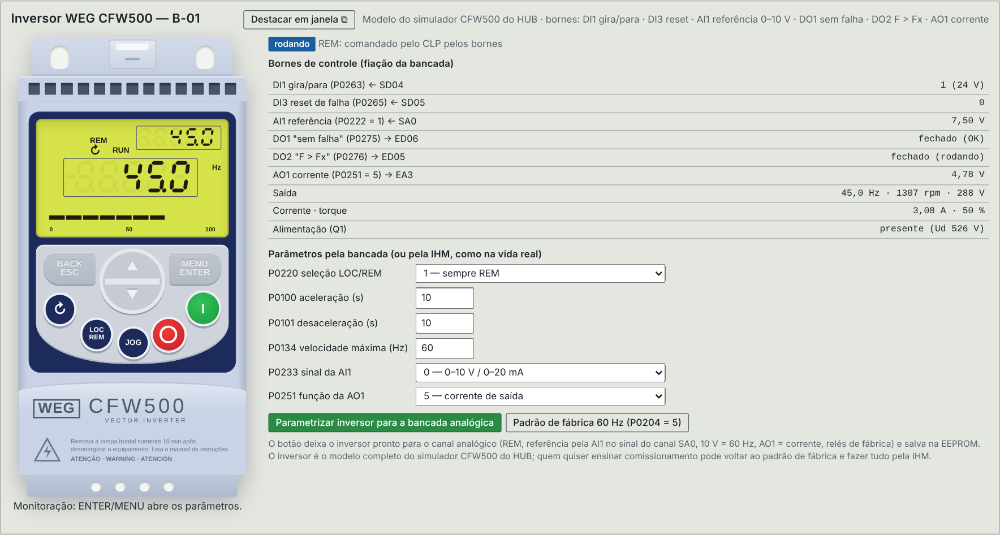
O CFW500 é o modelo do simulador CFW500 do HUB (motor, rampas, proteções, IHM real, EEPROM). O botão Parametrizar inversor para a bancada analógica grava tudo de uma vez, e o simulador já faz isso na primeira energização. Se você voltar o inversor para o padrão de fábrica, ou estiver numa bancada real, esta é a tabela a programar:
Parâmetros a programar no CFW500
| Parâmetro | Nome | Valor | Por quê |
|---|---|---|---|
| P0220 | Seleção da fonte LOC/REM | 1 = sempre remoto | o CLP comanda; em LOC só a IHM do inversor manda |
| P0222 | Referência de velocidade em REM | 1 = AI1 | a velocidade vem da saída analógica SA0 do CLP |
| P0227 | Gira/para em REM | 1 = entradas digitais | o gira/para vem da DI1 |
| P0233 | Sinal da entrada AI1 | 0 = 0–10 V | igual ao modo do canal SA0 do CLP |
| P0133 | Velocidade mínima | 3,0 Hz | abaixo disso o inversor não desce, mesmo com 0 V na AI1 |
| P0134 | Velocidade máxima | 60,0 Hz | 10 V na AI1 = 60 Hz |
| P0263 | Função da DI1 | 1 = gira/para | ligada em Inv_Gira |
| P0265 | Função da DI3 | 20 = reset de falha | ligada em Inv_Reset |
| P0275 | Função da DO1 (relé) | 13 = sem falha | vai para Inv_OK |
| P0276 | Função da DO2 (relé) | 2 = F > Fx | vai para Inv_Rodando (acima de 3 Hz, P0288) |
| P0100 | Tempo de aceleração | 2,0 s | de 0 a 60 Hz em 2 s: a bomba responde rápido à referência |
| P0101 | Tempo de desaceleração | 2,0 s | de 60 a 0 Hz em 2 s ao tirar o Inv_Gira |
Na IHM do CFW500: MENU/ENTER → grupo BASIC (ou I/O) → ▲▼ até o parâmetro → ENTER → ▲▼ até o valor → ENTER. Com o motor girando, parâmetros de configuração não aceitam mudança: pare a bomba antes.
O que o programa precisa saber: a alimentação do inversor é manual, pelo disjuntor-motor Q1 no quadro (manopla na porta, botão no Quadro elétrico) — o CLP não liga nem desliga o inversor. Com Q1 desligado o inversor está apagado (Inv_OK = 0) e, ao religar, leva 1,2 s de boot. A emergência S0 tem dois contatos NF: um vai a S0_Emerg_NF (o CLP sabe) e o outro está em série com a DI1 do inversor, então a bomba para pela rampa mesmo que o programa continue mandando girar. Quem fecha o relé "rodando" é o inversor depois de passar de 3 Hz — espere Inv_Rodando em vez de supor; uma falha abre o relé DO1 (Inv_OK = 0) e o reset é por Inv_Reset ou pela tecla O.
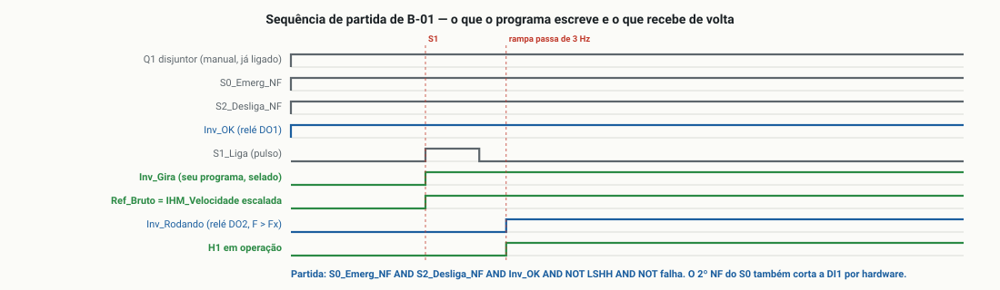
Como o processo se comporta
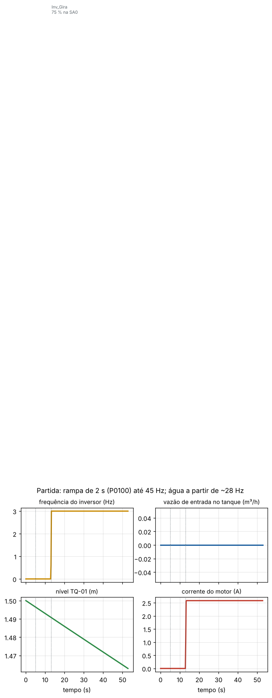
Q1 ligado (inversor já energizado) → Inv_Gira com 75 % → rampa de 2 s (0 a 45 Hz em 1,5 s) → a água só começa a entrar quando passa de ~28 Hz → 12 m³/h a 45 Hz. Com o consumo em 60 % saem ~5 m³/h, então o nível sobe 7 m³/h ÷ 2 m² = 5,8 cm/min. Use a velocidade 5× ou 10× da tela para não esperar.
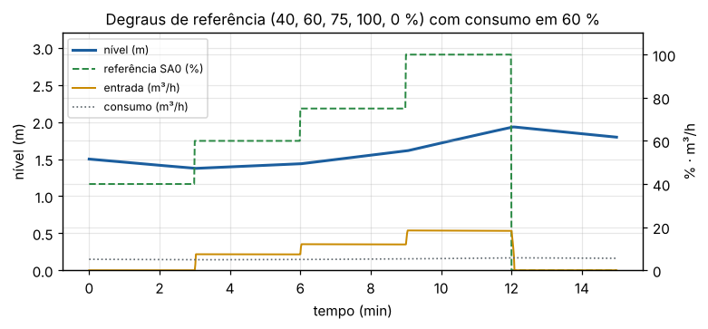
A referência manda na vazão de entrada; a HV-01 (instrutor) manda no consumo. Com 60 % de referência (36 Hz) entram ~7 m³/h — quase o mesmo que sai com a HV-01 em 60 %: o nível fica parado. É o ponto de equilíbrio que o exercício de controle proporcional vai encontrar sozinho.
| Situação | O que acontece | O que o programa deve ver |
|---|---|---|
| Nível chega ao ladrão (2,95 m) | o excesso sai pelo extravasor (ladrão) atrás do tanque, com jato e aviso "TRANSBORDANDO"; o nível para em ~2,97 m | LSHH em 2,8 m deveria ter parado a bomba antes |
| Consumo maior que a entrada | o nível cai até a LSLL | ED08 em 0,3 m |
| Fio rompido no LT-01 | 0 mA, bruto −8192 | parar o automático e alarmar |
| LT-01 travado | o valor congela com o nível mudando | cruzar com LSHH/LSLL |
| Falha no inversor | F0070, ED06 vai a 0, motor para por inércia | desligar SD04, sinalizar, permitir reset |
| Perda de comunicação | HB_Sim congela |
estado seguro em 3 s |
Interligar
Modbus TCP (CODESYS Control Win ou XP325) — o caminho principal
- No CODESYS: dispositivo → Add Device → Ethernet → Add Device → Modbus TCP Slave Device. Na configuração: porta 502, Unit ID 1, Holding Registers 4, Input Registers 3, Coils 9, Discrete Inputs 6 — exatamente o que a estação usa.
- Crie a lista de variáveis globais
GVL_SIMULADORe cole o conteúdo demastertool/GVL_SIMULADOR.st(as 22 variáveis da tabela, semAT, mais a internaIHM_Nivel_SP_Real). - Abra a aba Modbus TCP Slave Device I/O Mapping e ligue cada canal à sua variável: duplo clique na coluna Variable → botão
…→Application.GVL_SIMULADOR.<nome>. A ordem é a da tabela: Holding Registers[0..3] =LT01_Bruto,HB_Sim,IHM_Velocidade,IHM_Setpoint; Input Registers[0..2] =Ref_Bruto,HB_CLP,IHM_Nivel; Coils[0].Bit0..7 e Coils[1].Bit0 =S1_Liga…LSLL; Discrete Inputs[0].Bit0..5 =H1…Inv_Reset. O ícone de cada linha tem que ser o de "variável existente" (sem estrela amarela) e o endereço fica riscado — é o normal. Deixe Always update variables ativado. - Crie o programa
PRG_TQ01com o conteúdo demastertool/PRG_TQ01_GVL_SIMULADOR.ste chame-o na MainTask. - Compile, Login, Download, Run. No simulador: Conectar ao CLP → Modbus TCP → IP (127.0.0.1 no mesmo PC; Control Win no SIM-HUB: 192.168.100.10) → porta 502 → Conectar.
Cuidados: as variáveis ligadas pela coluna Variable não podem ter AT (o CODESYS acusa "map to existing variable with address is not allowed"). Se preferir o contrário — sem mapear canal por canal —, use mastertool/GVL_SIM.st, que tem AT em cada variável (coils a partir de %IX8.0 e discrete inputs a partir de %QX6.0, porque o CODESYS põe essas áreas depois dos registradores); nesse caso não use a coluna Variable. No XP325 real, o servidor é o MODBUS Symbol Server na NET 1, com as mesmas variáveis nos mesmos endereços.
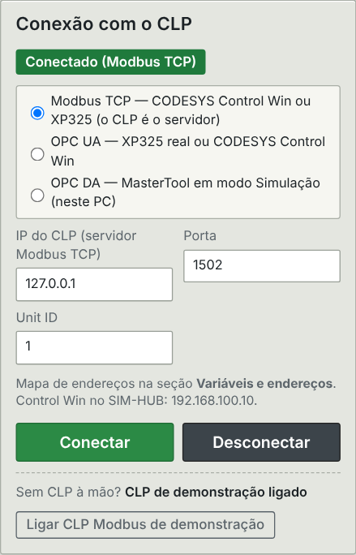
OPC UA (XP325 ou Control Win)
GVL GVL_SIMULADOR (mastertool/GVL_SIMULADOR.st) exposta no Symbol Set / Configuração de Símbolos com OPC UA, e o seu programa na MainTask (sem AT: no OPC o simulador escreve direto nas variáveis). Acesso leitura e escrita para as variáveis da primeira tabela (o que o simulador escreve) e só leitura para as da segunda. Segurança de laboratório: anonymous permitido e comunicação em texto plano, depois desligue e ligue a CPU. No simulador, OPC UA → IP → 4840.
OPC DA (MasterTool em modo Simulação, só neste PC)
O modo Simulação do MasterTool não tem rede, mas o servidor OPC DA do MasterTool enxerga a CPU simulada pela porta 11739 (é o caminho da Altus para FluidSIM e FactoryIO). Uma vez por PC: baixe o Graybox OPC DA Auto Wrapper (x86), copie gbda_aut.dll para tools\opcda\ e rode INSTALAR_OPCDA.bat como administrador. A cada sessão: projeto com a GVL_SIMULADOR e Configuração de Símbolos compilada; Simulação, Login, Run; Configuração do OPC com IP 127.0.0.1 e porta 11739; no simulador, OPC DA → Conectar.
Sem CLP
Ligar CLP de demonstração sobe um CLP falso (Modbus ou OPC UA) com os exercícios 1, 3 e 4 resolvidos — para conhecer o processo antes de programar.
A tela
- Estação (3D e sinótico): arraste para girar, rolagem para zoom. O quadro é uma coluna de comando de 2 m com os dispositivos na zona de operação (botoeiras a 0,86 m, cogumelo e seletor a 1,10 m, sinaleiros a 1,33 m, IHM de 10" a 1,62 m). Botoeiras e sinaleiros são de 22 mm em tamanho real, então aproxime a câmera (preset Quadro ou rolagem) para operar; segure as botoeiras, clique no seletor e no cogumelo; clique no volante da HV-01 para abrir e fechar o consumo. Os eletrodutos no piso levam os sinais do quadro ao motor, ao LT-01 e às boias.
- Medidores: coluna de nível com as marcas HH e LL (a entrada) e indicador de frequência do inversor (a saída, com a faixa vermelha abaixo de 36 Hz onde não entra água); tendência de 5 min com nível, referência, Hz, entrada e consumo.
- Som: a sirene
H4toca de verdade (tom bitonal). O navegador só libera áudio depois do primeiro clique na página — o botão 🔈/🔊/🔇 no topo mostra o estado e liga/desliga o som. - Painel de operação: a porta do quadro em 2D, igual à 3D, com a IHM do operador montada acima das botoeiras.
- Inversor: IHM real, bornes ao vivo, parâmetros e o botão de parametrização; Inversor ⧉ destaca em janela flutuante para operar olhando o 3D.
- Canais analógicos: LT-01 e SA0 nos três formatos — engenharia, sinal elétrico e contagem bruta — com o estado (normal, fio rompido, travado, inversor em LOC).
- Quadro elétrico: XP325 com os LEDs de cada ED e SD, e o disjuntor-motor Q1 do inversor (clique para ligar/desligar).
- Bancada: modo dos canais EA0 e SA0 (como no MasterTool/CODESYS), e fundo de escala do A/D.
- Variáveis e endereços: GVL e mapa Modbus com o estado ao vivo.
- Diagrama de ligação (botão no topo): a fiação com o estado de cada ponto.
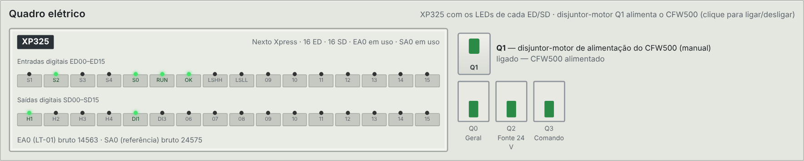
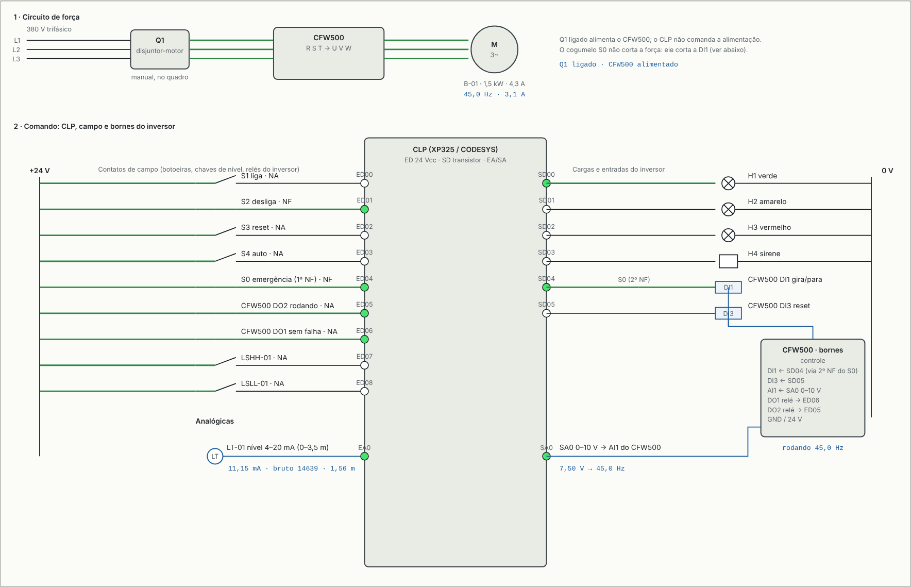
Laboratório de histerese
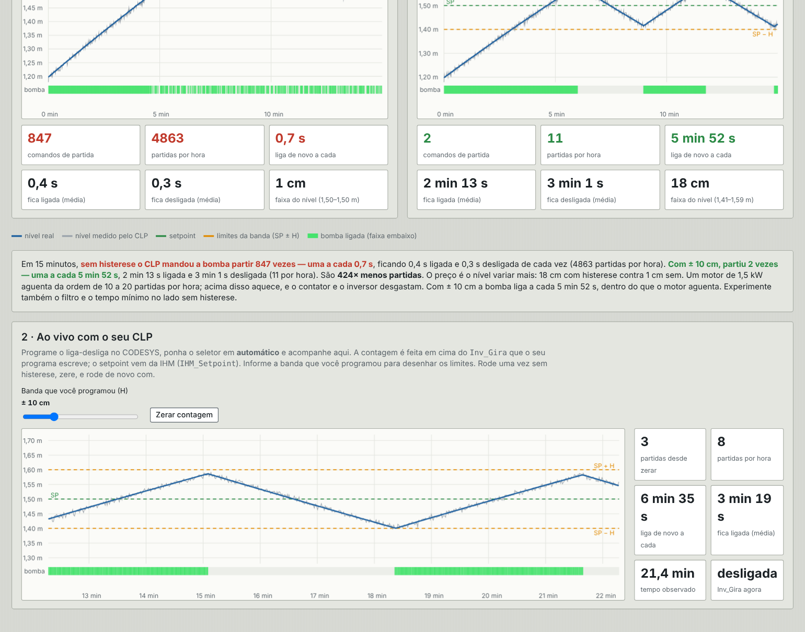
O botão Laboratório de histerese, no topo da tela, abre uma página para mostrar ao aluno por que todo liga-desliga precisa de banda morta.
1 · Comparação simulada. O simulador roda o mesmo tanque duas vezes, acelerado, com um CLP liga-desliga: à esquerda sem histerese (liga abaixo do setpoint, desliga acima) e à direita com histerese (liga abaixo de SP − H, desliga acima de SP + H e, entre os dois, mantém o estado). Os gráficos mostram o nível real, o nível medido (com o ruído do transmissor), o setpoint, os limites da banda e uma faixa verde com os momentos em que a bomba está ligada; embaixo, as contas: comandos de partida, partidas por hora, de quanto em quanto tempo a bomba liga de novo, quanto tempo ela fica ligada e desligada em média, e quanto o nível varia. Os números ficam verdes até 20 partidas por hora (o que um motor desse porte aguenta), âmbar até 60 e vermelhos acima disso. Com os valores padrão (SP 2,00 m, H = ± 10 cm, consumo 60 %), em 15 minutos o lado sem histerese manda a bomba partir milhares de vezes — o ruído de milímetros cruza o setpoint o tempo todo — e o lado com histerese, duas ou três. Dá para mexer no setpoint, na banda, no consumo, na velocidade, ligar um filtro na medição, impor um tempo mínimo ligado/desligado, pôr um TON de confirmação em cada comparação, usar o nível em cm inteiro (como o IHM_Nivel) ou tirar o ruído. Para comparar com o programa do aluno, reproduza o que ele faz e clique em Usar consumo e velocidade da estação: com SP 1,50 m, ± 2 cm, TON de 2 s, nível em cm, consumo 80 % e velocidade 80 %, o laboratório dá ~57 s ligada e ~60 s desligada — o mesmo que um programa em Ladder com esses valores mede ao vivo. Repare que o TON sozinho já filtra muito: com ele, até o lado "sem histerese" cai de milhares para dezenas de partidas por hora — por isso, na aula, tire o TON e deixe só a histerese. Com ± 10 cm e sem TON, nas mesmas condições, ficam ~10 partidas por hora, com a bomba ~3 minutos ligada e ~3 minutos desligada, e o nível entre 1,41 e 1,59 m.
2 · Ao vivo com o seu CLP. Com o programa do aluno rodando em automático, a página conta as partidas a partir do Inv_Gira e desenha os últimos 10 minutos com o setpoint da IHM e a banda que o aluno diz ter programado. A aula fica assim: programa sem histerese, roda alguns minutos, anota as partidas por hora; Zerar contagem; programa com histerese, roda de novo, compara. Embaixo do gráfico aparecem os últimos períodos, um por um ("ligada 19,2 s · desligada 17,1 s…"), para conferir com um cronômetro. Os botões de escala de tempo (30 min a 30 s, também nos gráficos simulados) aproximam o gráfico; abaixo de 1 min as marcas ficam em minutos:segundos.
Instrutor
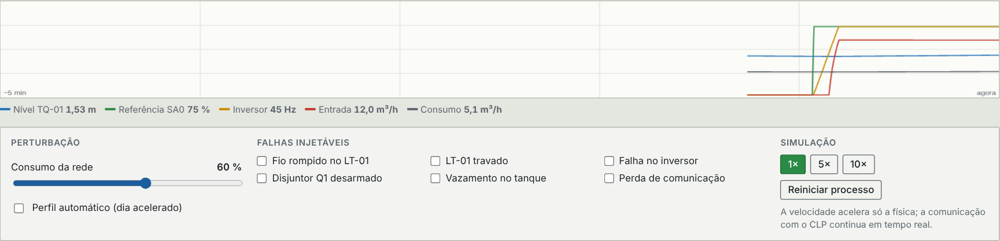
Consumo da HV-01 (slider ou perfil automático), fio rompido no LT-01, LT-01 travado, falha no inversor, disjuntor Q1 desarmado, vazamento no tanque, perda de comunicação; velocidade 1×, 5× e 10× (só a física) e reinício do processo.
Trilha de exercícios
- Partida e parada com intertravamentos. Permissão =
S2_Desliga_NF AND S0_Emerg_NF AND Inv_OK AND NOT LSHH; selo comS1_Liga;Inv_Gira= ligado;Ref_Bruto=IHM_Velocidadeescalada para 0–32767; nível de volta para a IHM;H1pelo retornoInv_Rodando; falha memorizada em H3 até S3. Aprovação: S1 parte, S2 e S0 param, sem o inversor OK nada gira, H1 só acende com o retorno, mudar a velocidade na IHM muda os Hz, e a IHM mostra o nível.PRG_TQ01_GVL_SIMULADOR.sté a solução de referência (exercícios 1 e 4). - Escalonamento da entrada e da saída. Nível em metros a partir de
LT01_Bruto; referência em % virandoRef_Bruto. Aprovação: os seus valores batem com a coluna Engenharia da tela em três pontos; depois troque o modo do canal EA0 na Bancada e explique a diferença. - Alarmes e fio rompido. L (0,5 m), LL (0,3 m ou ED08), H (2,6 m), HH (2,8 m ou ED07) com histerese de 5 cm e reconhecimento por S3; detecção de fio rompido bloqueando o automático. Aprovação: injete fio rompido com a bomba ligada e mostre a parada segura.
- Controle liga-desliga de nível com histerese (use o Laboratório de histerese para comparar sem e com banda). No ST, calcule
IHM_Nivel_Real := TO_REAL(IHM_Nivel) / 100.0,IHM_Nivel_SP_Liga := IHM_Nivel_SP_Real - 0.10eIHM_Nivel_SP_Desl := IHM_Nivel_SP_Real + 0.10. Em Ladder, três degraus: (1)S4_AutoNA ·S0_Emerg_NFNA ·LSHHNF · LE (IHM_Nivel_Real≤IHM_Nivel_SP_Liga) → SETInv_Gira; (2) os mesmos contatos · GE (IHM_Nivel_Real≥IHM_Nivel_SP_Desl) → RESETInv_Gira; (3) segurança, três contatos em paralelo —S4_AutoNF,S0_Emerg_NFNF,LSHHNA — → RESETInv_Gira. Sem TON. A velocidade continua sendo a da IHM.PRG_TQ01_GVL_SIMULADOR.sté o equivalente em ST. Aprovação: com SP 1,50 m, o nível oscila entre 1,40 e 1,60 m, a bomba liga a cada poucos minutos (no máximo ~20 partidas por hora no Laboratório de histerese → Ao vivo), e apertar a emergência, passar para manual ou atuar a LSHH desliga a bomba e ela não volta sozinha.
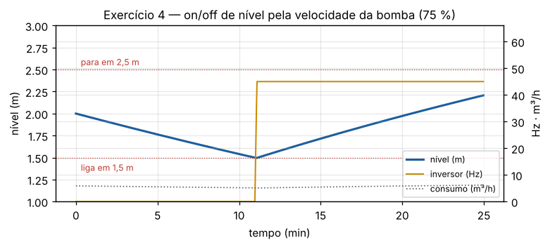
- Controle proporcional e PID de nível pela velocidade. Setpoint vindo da IHM (
IHM_Setpoint); saída limitada a 0–100 %; comece comref = 60 + Kp × (SP − PV)e observe o erro em regime, depois adicione a integral (bloco PID do CODESYS/MasterTool). Aprovação: com o perfil de consumo automático, o nível fica a ±10 cm do setpoint e a bomba não para e liga toda hora. - Proteções. Bomba sem vazão (referência abaixo de 36 Hz por mais de 20 s em automático), LSLL, falha do inversor, perda de comunicação. Aprovação: cada falha injetada para a bomba, acende H3 e mostra a causa.
Instalar, iniciar e atualizar
- Descompacte a pasta inteira em um lugar com permissão de escrita.
INSTALAR.bat: Node.js se faltar, dependências, atalho.INICIAR_SIMULADOR.bat: abre http://127.0.0.1:3050.TESTAR.bat: testes automáticos, deve terminar em "0 falha(s)".
No HUB de simuladores, importe o .zip em Adicionar e atualizar. config/ (conexão) e server/data/ (EEPROM do inversor) são preservados.
Problemas comuns
- Porta 3050 em uso: o simulador já está aberto.
- O CLP não vê as botoeiras: olhe os LEDs do XP325 no quadro elétrico; se acendem no simulador e não no CLP, o problema é a comunicação (coluna de conexão: fila, latência, último erro).
- Escrevo na SA0 e nada gira: disjuntor Q1 ligado, cogumelo S0 destravado (ele corta a DI1), inversor em REM (botão Parametrizar inversor), referência acima de 60 % para haver vazão. F00xx no display é falha: reset pela DI3 ou tecla O.
- Bruto estranho: modo do canal na Bancada contra o transmissor (4–20 mA) e contra a AI1 (0–10 V); fundo de escala do A/D do seu CLP.
- OPC DA não conecta: rode
INSTALAR_OPCDA.bate leia em qual passo parou.